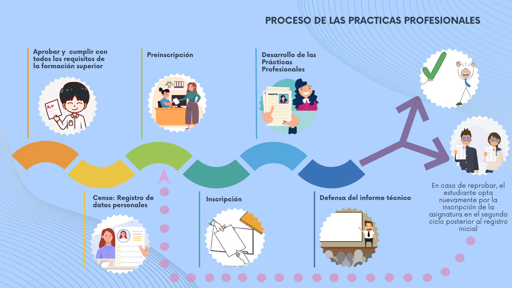

SISTEMA DE GESTIÓN DE PRÁCTICAS PROFESIONALES UNEFA

Las prácticas profesionales persiguen optimizar las diferentes actividades que se llevan a cabo en cada una de las
áreas de trabajo de las distintas organizaciones, establecer espacios de participación a los (las) estudiantes
para que desarrollen competencias y habilidades, a fin de complementar su ciclo de formación académica, además de
su desarrollo individual y social.
Requisitos para optar por la inscripción
Para optar por la inscripción de esta asignatura es necesario haber aprobado:
Las unidades de créditos que establezca el plan de estudio vigente.
Las actividades complementarias.
Las asignaturas Cátedra Bolivariana y Defensa Integral de la Nación.
El servicio comunitario.
Estar inscrito en el Registro Nacional de la Juventud Trabajadora.
Cumplir con las disposiciones establecidas en la normativa interna de la universidad que rige la
materia.
Documentación requerida para el proceso de inscripción